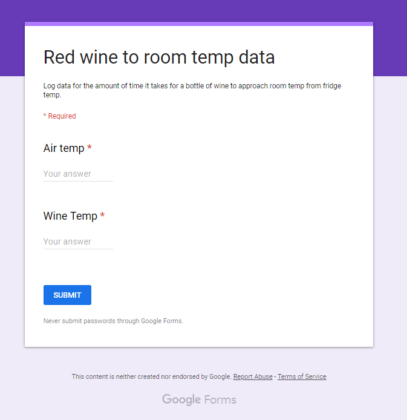
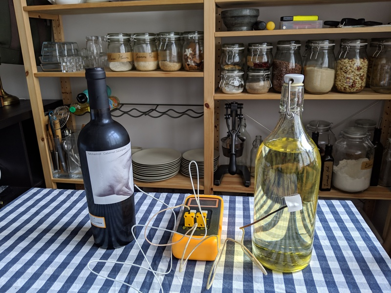
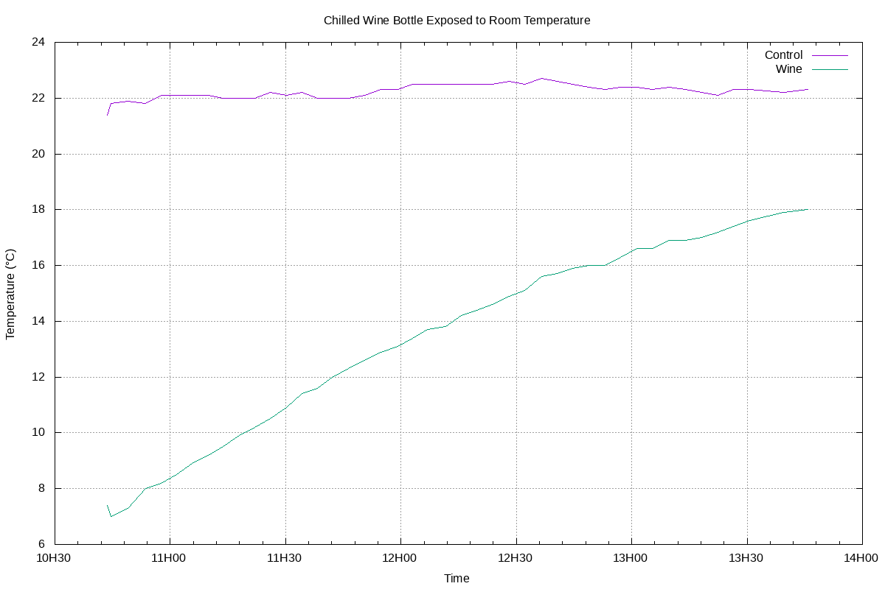
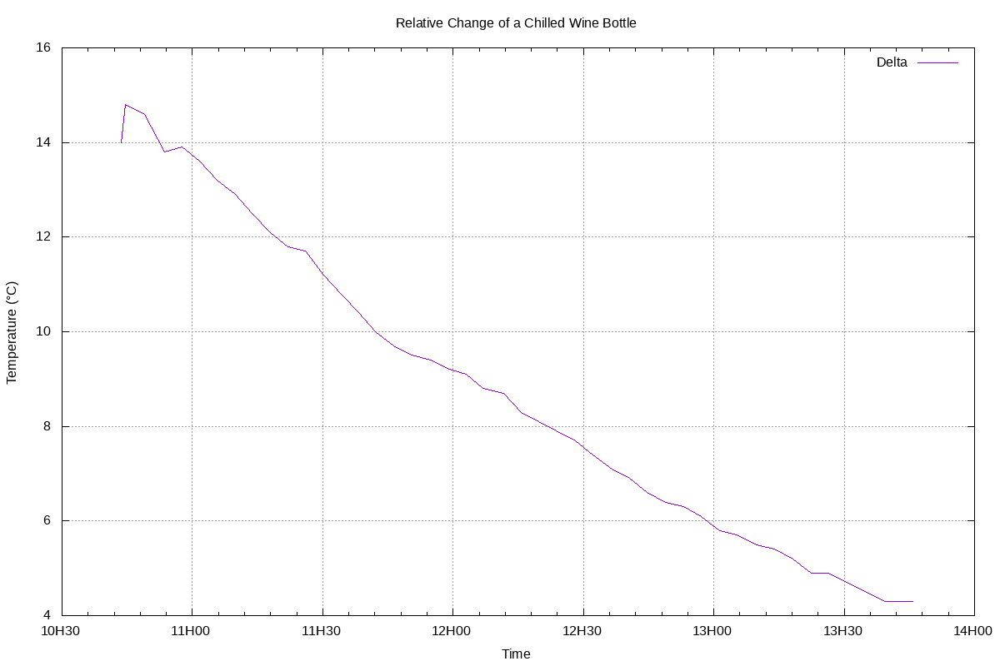

How long does it take red wine bottle stored in a refrigerator to come to drinking temperature?
Red wine is supposed to be served at (15°C-18°C) with the range varying depending on varietal, not at modern room temperature. Since most people still do not own climate controlled cellars, the bottle can either be held at a colder temperature in a refrigerator and thawed, or stored at room temperature and chilled.
Since excessive heat and light exposure can also damage wine, its useful to explore the practicality of storage in a refrigerator. This can be calculated with thermal equations, but modeling will not be as accurate as a experiment.
A form is created on google forms to collect data with accurate time stamping. A reminder is set about every four minutes to check and log the temperatures into the form.
Two K-type thermocouples are attached to a glass bottle of room temperature oil to act as a low pass filter for any room temperature variations, and a bottle of red wine directly from the refrigerator. Both are placed on the same table with about a foot of separation.
The data was downloaded from Google Forms as a CSV, the first few lines of data.csv are shown below.
"Timestamp","Air temp","Wine Temp"
"2019/04/13 10:43:36 AM GMT+2","21.4","7.4"
"2019/04/13 10:44:36 AM GMT+2","21.8","7.0"
"2019/04/13 10:48:55 AM GMT+2","21.9","7.3"
"2019/04/13 10:53:30 AM GMT+2","21.8","8"
...
The file is simplified with sed to remove the AM/PM and timezone data, also 1 PM is replaced with the 24hr format 13 and the formatted file is placed in dataFormatted.csv.
cat data.csv | \
sed -E 's/ [APM]{2} GMT\+2//g' | \
sed -E 's/ 1:([0-9]{2}:[0-9]{2})/ 13:\1/g' > \
dataFormatted.csv
A gnuplot file chart.gnuplot is made to plot the data.
gnuplot -c chart.gnuplot > chart.png
Another copy of the gnuplot file, chartDelta.gnuplot, is made and modified to calculate the delta (Control-Wine). This is run to generate the delta chart.
gnuplot -c chartDelta.gnuplot > \
chartDelta.png
Two charts are generated from the data set and are shown below.
It takes approximately 105 minutes (1:45) for a bottle to enter the recommended (15°C-18°C) temperature range and further exposure to room temperature allows it to remain in that range for 75 minutes (1:15).
The recovery relationship is quite linear in this domain although it will become more asymptotic as wine temperature approaches air temperature.
The approximately two hour wait is quite significant. If you live in a climate and have your heating set where your room temperature is generally below 21°C (70°F) and never exceeds 27°C (80°F), keep the bottles at room temperature and chill down in a refrigerator about 30 minutes before (determining this time requires a more complex experiment). Keeping it in the refrigerator after opening it for some time as well. This provides possibly double the time the bottle is in the ideal range.
If living in a warmer climate, or with larger temperature fluctuations, keep the bottle at the top of the refrigerator, and suffer the time required for it to come up to temperature, or remove it far in advance and quickly chill again right before consumption, protecting the bottle from extended exposure.